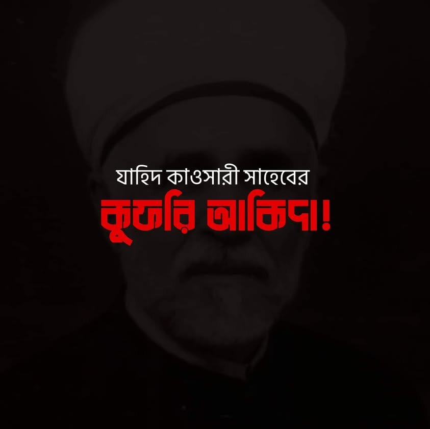

কবরবাসী পীর-বুযুর্গের ব্যাপারে শাইখ মোহাম্মদ যাহিদ আল কাওসারি যে শিরকি আকিদাহ…
২০ আগস্ট, ২০২২
কবরবাসী পীর-বুযুর্গের ব্যাপারে শাইখ মোহাম্মদ যাহিদ আল কাওসারি যে শিরকি আকিদাহ রাখতেন, এ ব্যাপারে আমাদের দেশীয় মাতুরিদি ভাইয়েরাও কি সহমত?
যাহিদ কাওসারির ভাষ্য মতে-
ينتفع بزيارة القبور و الاستعانة بنفوس الأخيار من الاموات في استنزال الخيرات و استدفاع الملمات.
করব যিয়ারত করার মাধ্যমে এবং কল্যাণ তলবের ক্ষেত্রে ও বিপর্যয় মোকাবেলায় মৃত নেককার আত্মার সাহায্য চাওয়ায় মাধ্যমে উপকার অর্জিত হয়।
[মাহকুত-তাকাউউল ফি মাসআলাতিত তাওয়াসসুল-১০]
এ বক্তব্য উনার একার নয়। সেকালের সাদ উদ্দিন তাফতাজানি থেকে শাইখ যাহিদ কাওসারির শিষ্য আবুল ফাত্তাহ আবু গুদ্দার আকিদাও এক ও অভিন্ন।
গ্রীক দর্শনের প্রভাবে করবস্থ বুযুর্গ থেকে কল্যাণ লাভের প্রমাণ দিতে উনারা কোরআন ও হাদিসের যে অপব্যাখ্যা করেন, তা সত্যিই দুঃখজনক। এমন শিরকি আকিদাহ কোনো মুসলিম রাখতে পারে না। এসব হিন্দু কিংবা খ্রিষ্টীয় ধর্মের সাথে মানায়। শরিয়তে মুহাম্মাদির সাথে এসব আকিদাহ'র কোনো সম্পর্ক নেই। খুদ হানাফি মাজহাবের অনেক ইমাম এসব আকিদাহ রদ্দ করেছেন। সংক্ষেপে ইমামুল হিন্দ শাহ ওয়ালিউল্লাহ দেহলভি রাহ-এর উক্তি পেশ করতে চাই। তিনি বলেন-
وعلم أن طلب الحوائج من الموتى عالما بانه سبب لانجاحها كفر يجب الاحتراز عنه. تحرّمه هذه الكلمة. و الناس اليوم فيها منهمكون.
মৃত ব্যক্তিকে সফলতার মাধ্যম মনে করে তার কাছে প্রয়োজন তলব করা কুফরি। এত্থেকে বিরত থাকা ওয়াজিব। কালিমায়ে তাওহিদ তা হারাম ঘোষণা করে। অথচ, মানুষ আজকাল এ কুফরিতেই নিমজ্জিত রয়েছে। [আল-খাইরুল কাসির- ১০৫]
যাহিদ কাওসারি ও আবু গুদ্দাকে যারা ইমাম ও মুকতাদা মানেন, তারাও এসব কুফর ও শিরকি আকিদাহ পোষণ করেন কি না- জানার আগ্রহ রইল।
